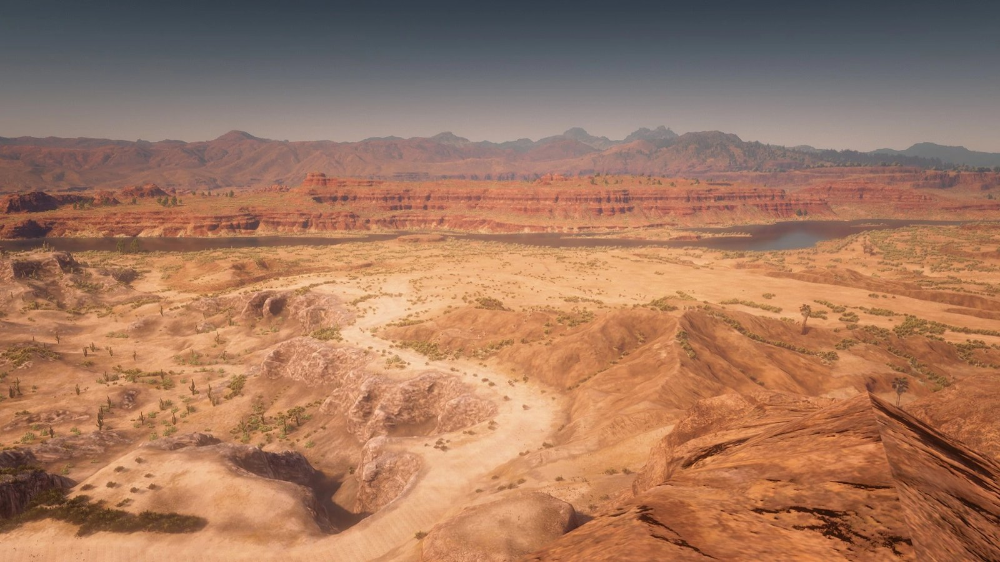
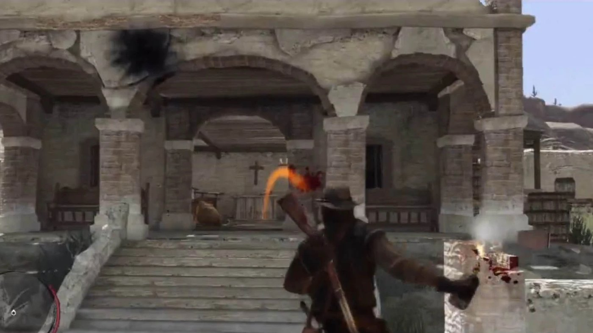
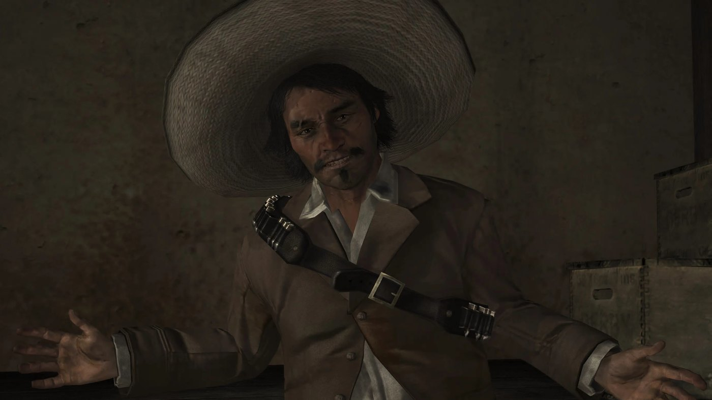

Guide de l'histoire · Red Dead Redemption Acte II : Nuevo Paraíso Red Dead Redemption Acte 2 sur 3 Nuevo Paraíso 1911 Par Joseph Lambert · Mis à jour le 9 septembre 2026  Nuevo Paraíso, la province mexicaine située de l'autre côté de la San Luis River. Bill Williamson a échappé à l'assaut de Fort Mercer dans l'acte 1 et est passé au Mexique. John Marston le suit au-delà de la San Luis River, dans le Nuevo Paraíso, une province en pleine guerre civile. Le deuxième acte repose sur un choix unique : John travaille pour les deux camps à la fois, parce que les deux prétendent pouvoir lui livrer les hommes qu'il cherche. Spoilers complets sur l'acte 2 de Red Dead Redemption. Le cadre : Nuevo Paraíso Nuevo Paraíso est la région mexicaine du jeu, à laquelle on accède en franchissant la San Luis River depuis New Austin. Chuparosa en est la ville principale. Escalera, au sud, abrite le siège du gouvernement provincial. El Presidio est un poste militaire fortifié, et Las Hermanas un couvent qui recueille les plus pauvres. La province vit sous administration militaire, et une rébellion armée y est en cours. Les deux camps Le colonel Agustín Allende administre la province pour le gouvernement mexicain et réside à Escalera. Son officier, le capitaine Vicente de Santa, gère l'essentiel des rapports entre l'armée et John. En face, une rébellion est menée par Abraham Reyes, jeune révolutionnaire beau parleur, et par Luisa Fortuna, une paysanne qui croit en lui sans réserve. Allende protège Bill Williamson et Javier Escuella, ce qui oblige John à traiter avec lui.  John se bat pour l'armée comme pour les rebelles à travers tout le Nuevo Paraíso. Jouer sur les deux tableaux De Santa promet à John que l'armée lui remettra Bill et Javier, puis l'envoie combattre les rebelles. Reyes lui fait la même promesse et l'envoie attaquer des convois militaires et libérer des prisonniers. John accepte les contrats des deux camps et dit ouvertement que l'issue de la guerre lui est indifférente. L'acte enchaîne les missions sans jamais produire les deux hommes, jusqu'à ce que John cesse d'attendre que l'un ou l'autre tienne parole. Landon Ricketts Landon Ricketts est un vieux pistolero américain qui coule sa retraite à Chuparosa. Nigel West Dickens avait orienté John vers lui dès l'acte 1. Ricketts est la seule figure de la région à n'avoir aucun intérêt dans la guerre : il protège les habitants de la ville, apprend à John à dégainer plus vite et l'accompagne sur plusieurs missions. La trahison de De Santa De Santa finit par livrer John pour qu'il soit exécuté. John échappe au peloton et le tue. La rupture met fin à toute apparence de collaboration avec l'armée, et John s'engage du côté des rebelles pour atteindre Escalera.  Javier Escuella, deuxième nom sur la liste de John, est pris à El Presidio. El Presidio et Escalera John et les rebelles donnent l'assaut à El Presidio pour libérer Reyes, fait prisonnier. Luisa Fortuna est abattue pendant l'attaque. Javier Escuella se trouve dans le fort, et John le capture vivant. L'acte s'achève sur l'assaut d'Escalera : les forces d'Allende cèdent, et Allende comme Bill Williamson y sont tués. Reyes prend la province et marche sur la capitale, tandis que John repart vers le nord avec un seul nom encore sur sa liste, celui de Dutch. Personnages clés L'acte 2 suit John Marston entre deux camps : le colonel Agustín Allende et le capitaine Vicente de Santa côté gouvernement, Abraham Reyes et Luisa Fortuna côté rebelle. Landon Ricketts l'aide sans rejoindre ni l'un ni l'autre. Javier Escuella et Bill Williamson sont les cibles. Les événements clés de l'acte 2 John franchit la San Luis River pour gagner le Nuevo Paraíso et y retrouver Bill Williamson et Javier Escuella. Il travaille pour le colonel Allende et le capitaine de Santa, et en même temps pour Abraham Reyes et les rebelles. Landon Ricketts, pistolero à la retraite installé à Chuparosa, l'entraîne et lui prête main-forte. De Santa trahit John et tente de le faire fusiller ; John s'échappe et le tue. Les rebelles attaquent El Presidio pour libérer Reyes, Luisa Fortuna est tuée, et John capture Javier Escuella vivant. Escalera tombe, Allende et Bill Williamson sont tués. Reyes prend le pouvoir dans la province, et John remonte vers le nord pour traquer Dutch van der Linde dans l'acte 3 (West Elizabeth). PrécédentActe I : New Austin SuivantActe III : West Elizabeth